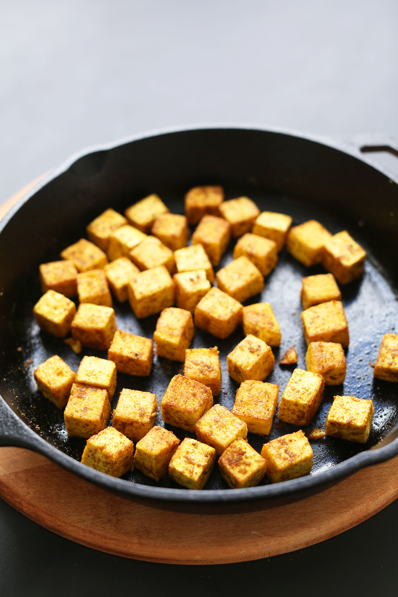

Crispy Tofu

Home
Crispy tofu made without baking for an hour!
Quick and easy crispy tofu can serve as the base of so many dishes or be eaten all on its own! No more waiting around for ages to get crispy tofu!
Ingredients
- 16 oz extra firm tofu
- Pich of salt
- 1 tsp desired seasoning i.e. curry powder, chili powder, tamari, tadoori spice, etc.
- 1 tbs oil of your choice
Directions
- Preheat oven to 375 degrees F (190 C) and wrap your extra firm tofu in an absorbent towel. Set something heavy on top,like a cast iron skillet, to press out extra moisture for 5 minutes.
- Unwrap tofu and cut into small cubes, then add to a medium mixing bowl and season with a pinch of salt and desired seasoning, which will vary depending on your dish. I was adding mine to a curry, so I added curry powder. If adding to a BBQ dish, try a BBQ seasoning blend. Or if adding to a Thai dish, try a Thai curry powder. If you want it to remain neutral in flavor and just crisp up, simply season with salt and skip the extra seasoning.
- Heat a large oven-safe metal or cast iron skillet over medium heat. Once hot, add the oil and the seasoned tofu. Sauté for 5 minutes, shaking/flipping occasionally to cook on all sides, until tofu has a slight crust on each side and has begun to brown.
- Transfer skillet to oven to bake for about 15 minutes, or until the tofu is firm to the touch and has begun to dry out and crisp up. The longer it bakes, the firmer it gets. I found the 15-minute mark to be about right.
- Now you have crispy tofu to add to virtually any dish you'd like!